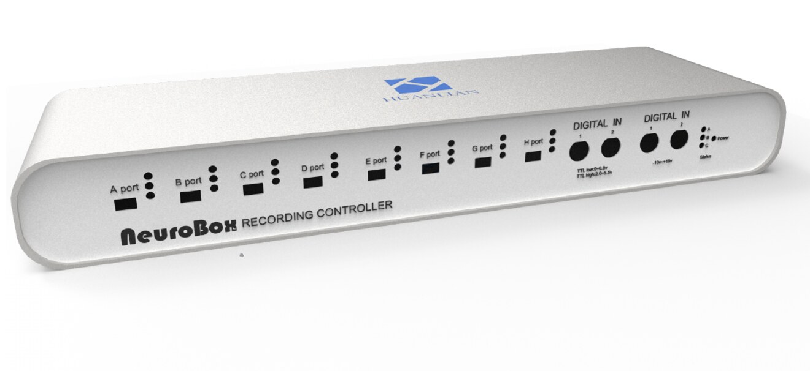
"最高 2048 通道的高通量神经信号采集"
NeuroBox N512、N1024、N2048 覆盖 512-2048 通道，8 路电极信号输入端口，USB 3.0 Type-C 数据传输，面向大规模在体电生理记录。
- 采样率
- 0-30 kHz
- 输入范围
- ±5.0 mV
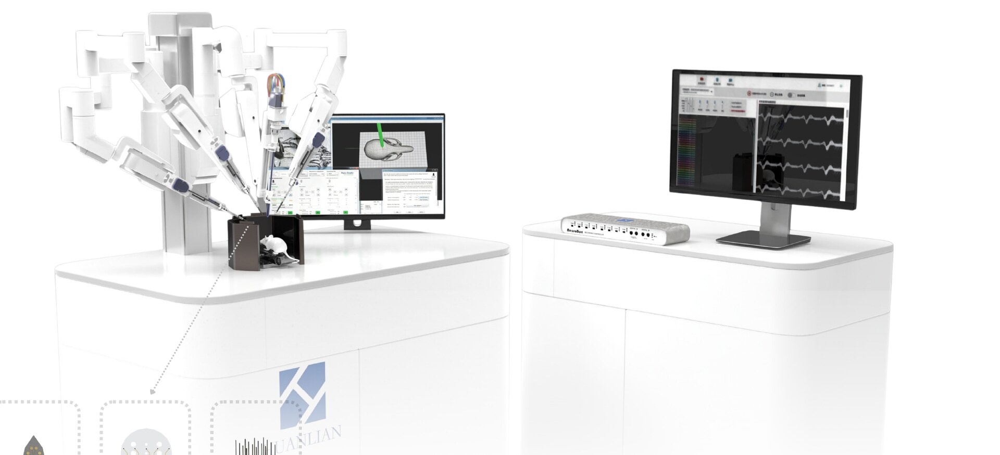
合肥幻联科技有限公司是国内专注于侵入式脑机接口系统研发与产业化的高科技企业，核心业务涵盖高端植入式电极、高通量神经信号采集设备的研发、生产及配套科研技术服务，为神经科学研究提供自主可控的全栈式解决方案。
公司核心团队覆盖材料科学、微纳加工、芯片设计、神经电生理及算法开发等关键领域，已掌握可溶性神经介质材料、硅基探针微纳加工、高频信号采集算法等核心技术，是安徽省内领先的侵入式脑机接口高科技企业。
产品矩阵包括 2048 通道 NeuroBox 采集系统、密歇根硅基电极、ECoG 柔性皮层电极、微丝电极及高密度微电极阵列，适配基础科研、光遗传联用、长期在体记录等场景，已服务于海内外多家科研机构。
公司以"推动脑科学研究普及、助力国产脑机接口技术落地"为使命，持续为用户提供稳定可靠的设备与全程技术支持。
Overall Solution for In Vivo Neuroelectrophysiology

幻联科技在体神经电生理整体解决方案，依托密歇根硅基电极、ECoG 柔性电极、微丝电极、NeuroBox 高通量神经信号采集系统、NeuroAnalysis 神经信号记录分析软件几大核心产品，构建从电极植入、信号采集到数据分析的全流程闭环。
方案兼具高可靠性、微创化、智能化与定制化优势，适配动物实验与临床前研究场景，可显著提升神经科学研究与临床诊疗的效率与质量。

NeuroBox N512、N1024、N2048 覆盖 512-2048 通道，8 路电极信号输入端口，USB 3.0 Type-C 数据传输，面向大规模在体电生理记录。
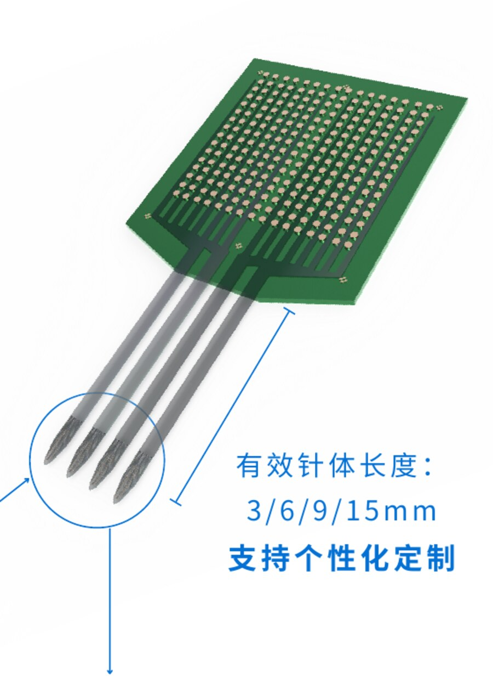
密歇根硅基电极基于硅基微纳加工，通道数覆盖 32-256 通道，支持 3/6/9/15mm 有效针体长度和个性化定制。
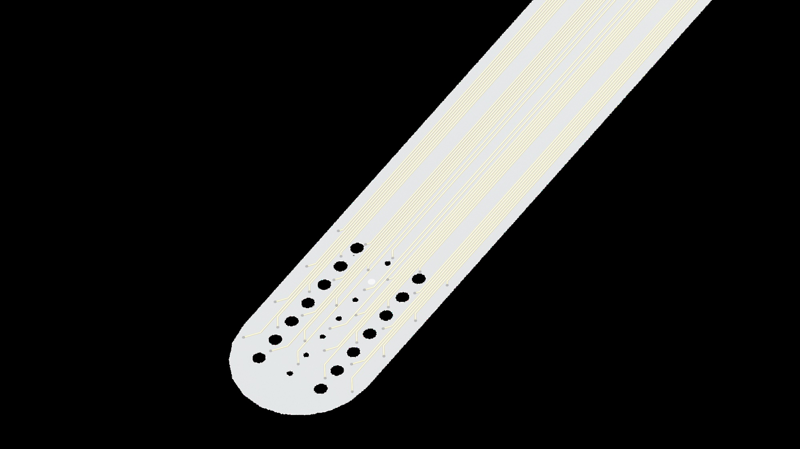
ECoG 柔性电极面向长期皮层 LFP 跟踪，可实现大范围多脑区脑皮层电信号观测，适配脑机接口、感官、高级认知和疾病机理研究。
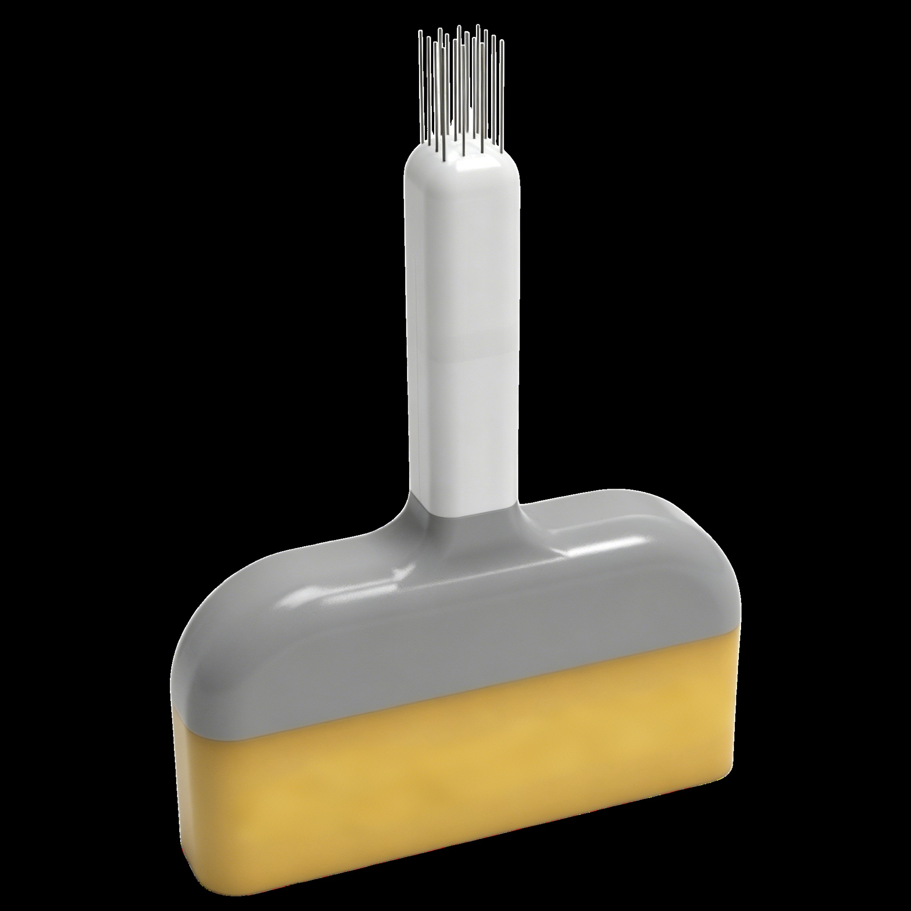
微丝电极由纤细电极丝精密排列组装而成，以聚乙二醇封装固定，支持峰电位(Spike)与局部场电位(LFP)记录和微电流刺激实验。
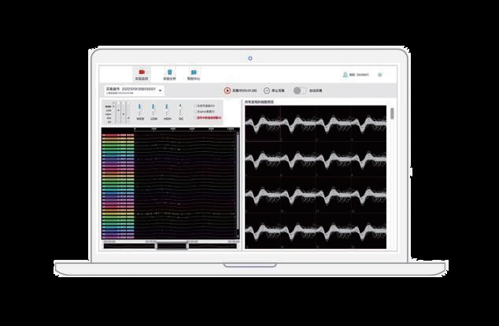
Headstage 是专为神经信号采集设计的前置放大器，支持 32/64 通道输入，配备标准电极接口与高速数据接口，无缝对接采集系统。
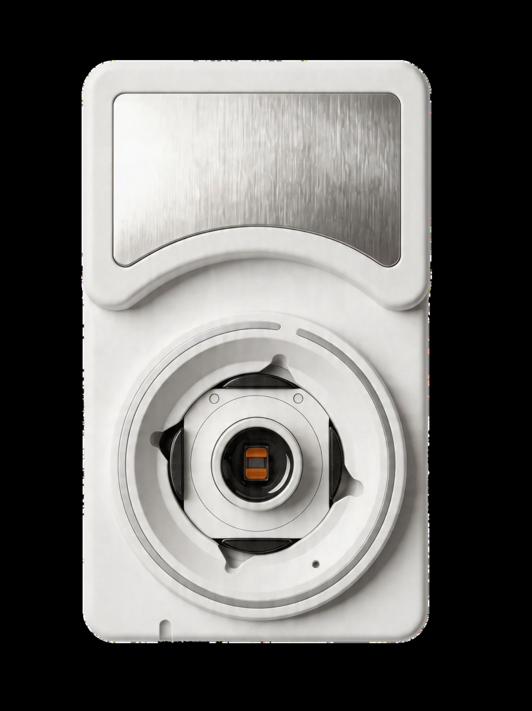
HD-MEAs 支持单孔 26,400 个记录/刺激电极，电极中心间距 17.5 μm，可在同一样本中同步追踪细胞功能、发育、连接与形态变化。
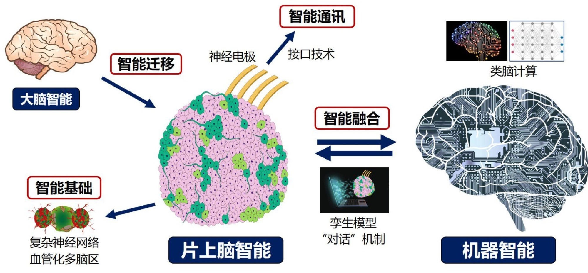
片上脑机将体外培养神经网络与微电极阵列芯片耦合，形成闭环交互系统，面向药物筛选、神经疾病建模和类脑计算。
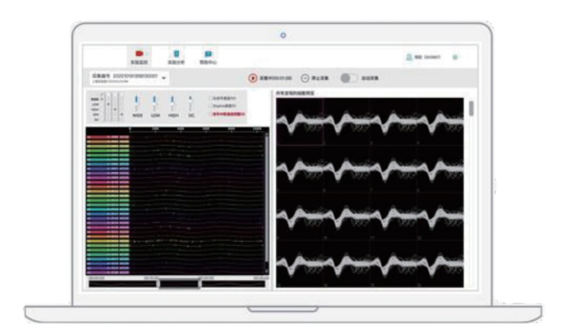
NeuroAnalysis 支持实时查看所有通道的神经信号波形，在线配置采样率与芯片带宽，测量各通道电极阻抗，支持高通量一键分选。
密歇根硅基电极以硅基材料为基底，采用微纳加工工艺制备，可实现高密度电极触点阵列，通道数覆盖 32~256 通道，适用于大脑不同深度区域的神经信号精准采集。电极采用超薄针体设计，可显著降低脑组织损伤；可兼容光遗传技术，用于稳定记录深部脑区峰电位(Spike)与局部场电位(LFP)，满足高精度、多通道、长期稳定的在体电生理记录需求。
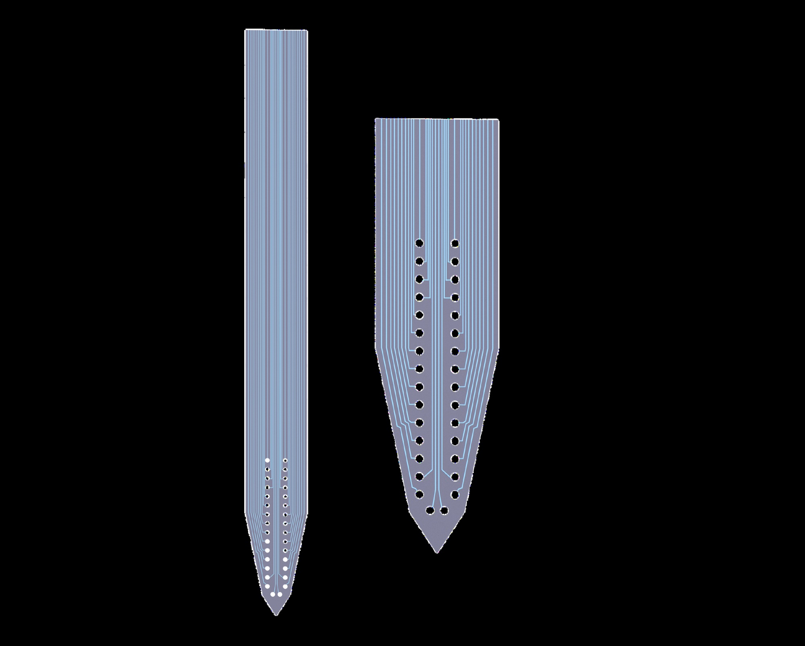
依托先进半导体微纳加工工艺，实现单根电极 32~256 通道的灵活定制，触点密度可达每平方毫米数百个。
采用生物相容性高纯单晶硅基底，无细胞毒性、无免疫原性，长期植入安全。
采用微米级尖峰设计，插入阻力低、定位精准，可大幅降低脑组织物理损伤与炎症反应风险。
全流程自动化标准化微纳加工生产，批次一致性高，确保跨实验室、跨批次实验结果的可重复性。
ECoG 柔性电极适合长期跟踪神经元的 LFP 信号，在疾病机制、记忆认知等研究方向相对于刚性电极优势非常明显。该皮层电极与脑组织贴合度高、信号稳定性强，可实现大范围多脑区脑皮层电信号(ECoG)观测。
支持 32/64/128 多通道配置，在扩大信号采集覆盖范围的同时，有效提升信号质量与生物相容性。
电极厚度最薄仅 5 μm，柔性贴合性能优异，可长期稳定追踪同一神经元，持续采集高精度神经信号。
具备优异的兼容特性，可完美适配本公司自研设备及全球主流品牌的神经信号采集系统，与各类设备平台实现无缝对接。
科学贴合大脑曲面，减少对脑组织的影响，提升信号采集精度与长期稳定性。
微丝电极由纤细电极丝精密排列组装而成，电极丝表面覆有生物相容性涂层，触点采用机械切断工艺制备。电极丝质地纤细柔韧，以聚乙二醇(PEG)封装固定，仅露出约 2~14mm 电极丝用于穿刺植入；植入过程中，固化的聚乙二醇可被水体逐步溶解，保证电极丝精准垂直刺入目标脑区。该阵列可有效记录峰电位(Spike)与局部场电位(LFP)，同时支持微电流刺激相关实验。
NeuroBox 以硅基材料为基底，采用微纳加工工艺制备，可实现高密度电极触点阵列，通道数覆盖 32~256 通道，适用于大脑不同深度区域的神经信号精准采集。电极采用超薄针体设计，可显著降低脑组织损伤；可兼容光遗传技术，用于稳定记录深部脑区峰电位(Spike)与局部场电位(LFP)，满足高精度、多通道、长期稳定的在体电生理记录需求。
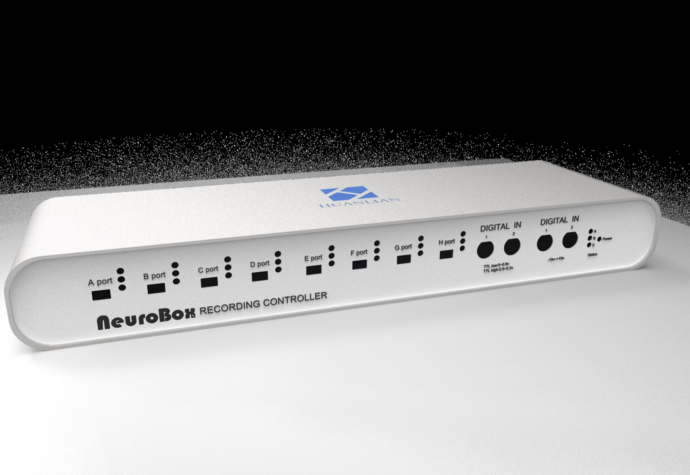
可采集 512 通道神经信号
可采集 1024 通道神经信号
可采集 2048 通道神经信号
Headstage 是专为神经信号采集设计的前置放大器，支持 32/64 通道输入，配备标准电极接口与高速数据接口，可稳定传输并预处理神经信号，无缝对接采集系统。NeuroAnalysis 是幻联科技自主开发的神经信号记录分析软件，支持实时查看、存储与分析神经信号。
支持实时查看所有通道的神经信号波形，并以二进制格式存储数据。
可在线配置采样率(0-30 kHz)，实时调整芯片带宽，测量并显示各通道电极阻抗。
支持高通量神经信号一键分选，峰电位与事件相关分析等多种数据处理功能。
传统 MEA 电极尺寸大、间距远，仅能检测样本中的部分神经元，记录的信号实为多个神经元放电的叠加总和。HuanLian HD-MEAs 凭借独特的超高分辨率与低噪声特性，阵列中每个神经元的 Spike 信号(包括沿轴突传播的动作电位)均可被多个紧密相邻的电极同时采集，可提供卓越的数据质量，既能捕捉复杂的神经网络动态，也能精准识别单个神经元的功能特征。
单孔 22,400 Pt-电极，超高空间分辨率：3,265 电极/mm²。
精准捕捉微弱电信号，保障数据可靠性。
支持任意电极点独立电刺激。
网络层面实时捕捉神经网络整体活动动态；细胞层面高分辨率记录单个神经元电活动特征；亚细胞层面解析突触级、微区电信号变化。
适配多种体外细胞与组织模型的电生理研究。
支持数周至月长期稳定电生理记录，完整追踪细胞网络功能成熟与纵向发育全过程。
急性样本
器官样本
PDMS 应用
片上脑机(Brain-on-a-Chip)是将体外培养的生物神经网络与微电极阵列芯片相耦合的前沿技术，结合生物计算机概念，构建具备一定生物智能的计算系统。
将体外培养的生物神经网络 -- 包括原代神经元或由干细胞分化而来的三维脑类器官 -- 与微电极阵列芯片相耦合，从而在芯片上构建出具备一定生物智能的"微型大脑"。通过编解码技术，计算机可以向"微型大脑"发送刺激信号(编码)，同时实时读取其神经电生理响应(解码)，进而形成"片上脑 -- 计算机 -- 外部设备"的闭环交互系统，使其能够执行避障、抓取等机器人控制任务。
以脑类器官为"处理器"的生物计算机，将人类干细胞培育的三维神经组织置于多电极阵列上，通过电/光刺激与反馈训练，利用神经元的突触可塑性自发形成并调整连接，实现无预编程的模式识别、任务求解等计算功能。它具备超低能耗、强并行处理与在线持续学习的特点，被视为突破硅基计算机能效瓶颈的潜在路径。